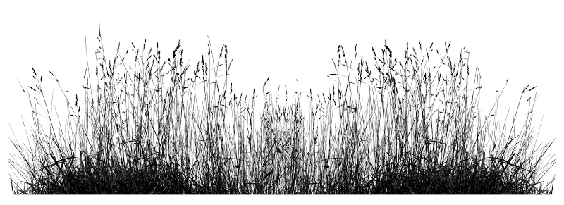

Videos on Regenerative Practices¶
Savory Institute¶
Green the World’s Deserts¶
and reverse climate change - Allan Savory
5 Mar 2013 - TED - “Desertification is a fancy word for land that is turning to desert,” begins Allan Savory in this quietly powerful talk. And terrifyingly, it’s happening to about two-thirds of the world’s grasslands, accelerating climate change and causing traditional grazing societies to descend into social chaos. Savory has devoted his life to stopping it. He now believes – and his work so far shows – that a surprising factor can protect grasslands and even reclaim degraded land that was once desert.
TEDTalks is a daily video podcast of the best talks and performances from the TED Conference, where the world’s leading thinkers and doers give the talk of their lives in 18 minutes (or less). Look for talks on Technology, Entertainment and Design – plus science, business, global issues, the arts and much more.
Running out of Time¶
Documentary on Holistic Management
2 May 2018 - Savory Institute - This in-depth documentary explores Allan Savory and how he has used Holistic Management to completely transform his land in Zimbabwe. Holistic Management was made popular in Savory’s 2013 Ted Talk, How to Fight Desertification and Reverse Climate Change.
This documentary was produced by Trevor Langham and his crew at Fig Multimedia Tech in Zimbabwe. We share this video in hopes that Trevor’s amazing work will reach a wider audience to honor his memory.
Stay connected:
About Savory Institute¶
Loss of grasslands leads to climate change, floods, droughts, famine, and worldwide poverty. It’s our mission to promote large-scale restoration of the world’s grasslands through Holistic Management.
Holistic Management is a process of decision-making and planning that gives people the insights and management tools needed to understand nature: resulting in better, more informed decisions that balance key social, environmental, and financial considerations.
Allan Savory in conversation with Charles Massy¶
chaired by Tim May at Groundswell 2019
10 Jul 2019 - Groundswell Agriculture - Tim May chairs a conversation with Allan Savory and Charles Massy in the Conference Barn at Groundswell 2019. Allan and Charles cover the challenges and rewards of Holistic Management.
More information on: Holistic Management, visit the Savory Institute.
Allan Savory Lecture¶
Wallace Stegnar POST Lecture
30 Mar 2015 - Savory Institute - Click here to see Allan Savory’s presentation at the Wallace Stegnar Lecture in February 2015. Allan Savory is the creator of Holistic Management and Planned Grazing. A native of Zimbabwe he shares in this talk what it means to manage holistically and how livestock, when properly managed to mimic nature, can be used as a tool to regenerate soil. Go to www.SavoryInstitute.org to learn more.
The Wallace Stegner Lectures feature writers, artists and thinkers who explore important issues related to land, nature and conservation. Proceeds fund Peninsula Open Space Land Trust’s work to protect open space, farms and parkland in and around Silicon Valley.
Grassland Restoration¶
Allan Savory at Tufts University
14 Mar 2013 - Steven Noble - Excerpted from Allan Savory’s presentation on January 25, 2013 at Tufts University’s Fletcher School, this segment highlights examples of how Holistic Management restores grasslands from land that’s degraded to desert. This innovative, natural, and simple idea mimics Nature by using careful management of livestock to stimulate the regrowth of grasses, animals, and puts large amount of greenhouse gases (GHG’s) from the air into the soil.
Event sponsored by The Center for International Environment and Resource Policy (CIERP) at the Fletcher School at Tufts University, the The Friedman School of Nutrition at Tufts University, and Planet-TECH Associates of Somerville, MA. Videography provided by Local Flavor LLC.
Putting Grasslands to Work, Day 1, Session 2¶
2 Sept 2014 - Savory Institute - A conversation about the power of regenerative agriculture:
Darren Doherty
Patrick Holden
Producers’ Panel
The following exerpt from the above video gives an incredibly insightful, epiphanous explanation of the delicacy, fragility and also similarity to the human organism in terms of symbiosis:

{kind=link}
Charles Massy¶
Charles Massy - The Farmer Author¶
22 May 2018 - SoilsForLife - In this new interview with Soils For Life, respected agriculture author, Charles Massy describes Australia’s rural landscape brutally. He says the term “desecrated” is a mild term.
Call of the Reed Warbler¶
Charles Massy in conversation with Costa Georgiadis
9 Dec 2017 - FriendlyFarms - Call of the Reed Warbler, with Charles Massy OAM
Author and radical farmer Charles Massy’s new book Call of the Reed Warbler explores transformative and regenerative agriculture and the vital connection between our soil and our health. According to Massy, we need a revolution — he believes that human health, our communities, and the very survival of the planet depend on it. Charles is coming to the Library to talk about how he believes a grassroots revolution can save the planet, help turn climate change around, and build healthy people and healthy communities, pivoting significantly on our relationship with growing and consuming food.
Charles is in conversation with Costa Georgiadis, nature lover and host of ABC’s Gardening Australia.
Filmed: State Library of New South Wales, Sat 9 Dec 2017
Supported by: The Saturday Paper, Friendly Farms
Regenerative Farming¶
A ‘natural way’ to help counteract drought (Australian Story)
28 Sept 2020 - ABC News In-Depth - For five generations, Charles Massy’s family rode on the sheep’s back and nearly destroyed their land in the process. When drought in the 80s and 90s almost sent him broke, the Cooma farmer switched to regenerative agriculture and watched his overgrazed land recover.
In his mid-50s, Charles Massy started a PhD, visiting eighty top regenerative farmers to see what they were doing differently. That led to his ground-breaking book Call of the Reed Warbler, a plea to farmers to start working with nature.
Note: National Farmers’ Federation’s Fiona Simson says this story does not fully represent her position on regenerative agriculture, which is one of broad support.
From the Ground Up¶
28 Jul 2019 - festival21 - Inspired by Charles Massy’s best-selling book “Call of the Reed Warbler”, filmmaker Amy Browne set out across the dry farming country of South East NSW to meet Massy and the other trailblazing farmers bringing new life to their land.
Regenerative agriculture is one of the most promising wide-scale environmental solutions. This short documentary is a comprehensive journey through a variety of landscapes and regenerative farming techniques.
‘From the Ground Up’ is a story of genuine change and inspiration - tracing the steps of individuals who transformed their practices following the life-changing realisation - that farmers have a unique opportunity to heal the planet.
Tony Lovell¶
Putting Grasslands to Work¶
4 Jan 2015 - Savory Institute - Click here to see Susie Ward introduce Tony Lovell at the Savory Institute 2014 International Conference in London, UK. Tony speaks of his work with SLM, and Holistic Planned Grazing in Australia. Tony has been a leader in the Holistic Management movement and a tremendous resource to Australia and beyond.There are some great aerial shots exhibiting of animal behavior while moving between paddocks. Tony also grazes camels with his cattle which also provides some great insights.
Tony Lovell, Sustainable Land Management Partners¶
Fixing the future, CCCB, Barcelona 2018
14 Apr 2018 - Atlas of the Future - “Nature is incredibly forgiving. When we get out of her way, stop fighting her, and listen to what she has been screaming at us, her capacity to heal will never cease to amaze and inspire me.” Methane-burping cows are often the scape-goats (or scape-cows) for climate change. By giving the animals a more holistic hook, Tony Lovell, co-founder of SLM Australia Livestock Fund, has raised a whopping $100 million to help regenerate billions of hectares of damaged grasslands. The cowboy against climate change uses soil management, biodiversity restoration and grazing techniques. FutureHero Interview ► https://bit.ly/2EIY5sc
FIXING THE FUTURE The bad news: the world is broken. The good? We can fix it. And now for the ugly: it’s going to get messy. Luckily there are plenty of people who are happy to get stuck in. Having now mapped over 500 planet-changing projects, Atlas of the Future sees our role as providing a window to the work of these innovators. On 13 March 2018 a future-‘supergroup’ gathered at the CCCB in Barcelona, ‘City of the Possible’, for our first event: ‘Fixing the future: adventures in a better tomorrow’. Meet the innovators fixing our food, economy and energy, and tackling climate change and water scarcity: https://bit.ly/2GRwzKU
Tony Lovell: Soil Carbon¶
Putting carbon back where it belongs – In the Earth
11 Sept 2011 - TEDxDubbo - Tony Lovell will explain the reasoning behind how more green growing plants means more captured carbon dioxide – more water – more production – more biodiversity – more profit. Did you know that a 1% change in soil organic matter across just one-quarter of the World’s land area could sequester 300 billion tonnes of physical CO2.
TEDxDubbo focused attention on what we call FACETS – Food, Agriculture, Climate, Energy, Topsoil and Sustainability. These FACETS are actually potent ideas shared by everyday people with an interest in these disciplines. In many of these topics there is an awareness campaign; the aim of bringing our community together united against catastrophic failures in our food-chain, environment and health. It is worth mentioning that we are also indebted to our natural systems for our economic wealth. Failures in Food, Agriculture, Climate, Energy, Topsoil and Sustainability are not just a local issue – they are a global concern.
Illawong, Table Top NSW¶
24 Sept 2020 - SoilsForLife - Bryan Ward’s property, Illawong, comprises 160 hectares and carries up to 140 beef cattle at any one time. While this is a relatively small property, it is perhaps typical of thousands of farms producing beef in Australia. Bryan’s achievements over 24 years of managing Illawong provide valuable lessons for producers seeking to maintain production while also regenerating and improving the condition of the land. Watch a 1-minute summary of Bryan’s key practices and achievements.
Colin Seis¶
Profitable Regenerative Agriculture¶
With Colin Seis
In this Webinar with Smartsoil EDU, Pasture Cropping Inventor Colin Seis discusses how to be profitable with Regenerative Agriculture and also talks about some recent trials conducted on his farm Winona in NSW Australia.
To learn more about Pasture Cropping or Colins Online course go here.
Winona, Gulgong NSW¶
3 Dec 2020 - Colin Seis faced adversity and then struck ‘gold’ by developing a new way to look after the land and his bottom line - building tonnes of soil along the way. Winona was one of the first Soils For Life case studies in 2012 but has recently been updated to map the ecological journey of the property, study the soil and take a closer look at the books of this successful enterprise.
Smartsoil “Ground Cover”¶
Pasture Cropping with Colin Seis
20 Aug 2019 - Smartsoil Media - In this episode of Ground Cover the Smartsoil team took a trip to NSW to meet Colin Seis, the co-creator of ‘Pasture Cropping’, a regenerative agriculture method that is providing a real solution to climate change and the food security issues facing us today.
Learn more about pasture cropping here.
If you or anyone you know is practicing biological/regenerative farming methods and think they would like to share their story, please connect : media@smartsoil.com.au
Digging Deeper¶
Soil Biology Forum - Colin Seis
17 Dec 2017 - amlrnrmboard - Pioneer of ‘pasture cropping’, Colin Seis, presents on how and why he implemented practice change on his south-west Victoria property, addressing issues of declining profitability, loss of grasslands, poor soil structure, dryland salinity, poor soil health, soil acidification and increasingly herbicide resistant weeds.
Other Key Voices¶
SmartSoil Ground Cover¶
13 Dec 2019 - Smartsoil Media - Ian and Di Haggerty are farmers from the Wheatbelt region of Western Australia who have partnered with nature to develop “Natural intelligence Farming”, integrating nature’s intuitive wisdom and biodiversity with food, fibre & beverage production.
We hope you enjoy watching as much as we enjoyed being out on country with two humble, nurturing farmers driving change in agriculture for a purpose much larger than themselves. We are grateful to the other influential figures also mentioned by Di & Ian, as the fruits of their wisdom can now be seen through their work.
There are simple solutions to the ecological crisis we face a species in the 21st century, & it is these regenerative processes like the Haggertys are practicing that will manifest the changes we need to make.
Invisible Farmer¶
3 Mar 2018 - ABC News (Australia) - ‘Invisible Farmer’ is the largest ever study of Australian women on the land, and seeks to reveal the diverse, innovative and vital role of women in agriculture. We meet Kay Tommerup, whose ideas for diversification helped saved the family farm.
Farming Sustainably¶
with Regenerative Agriculture
14 Jun 2017 - Happen Films - Regenerative agriculture offers a future for sustainable farming of meat in line with nature’s needs, by using holistic management and organic/biodynamic practices and even sequestering carbon in the soil – so important in our response to our climate crisis. At Mangarara, in New Zealand’s beautiful Hawke’s Bay, Greg Hart and his family are in the process of restoring 1500 acres of land, conventionally farmed for over 150 years, into the paradise it once was.
Regenerative Agriculture in Deep Creek¶
Ryan family farm case study
22 Jun 2020 - amlrnrmboard - Ben Ryan is a sheep and cattle farmer operating on 760 hectares in Deep Creek, approximately 100km south of Adelaide, on the Fleurieu Peninsula. We visited Ben and his family in autumn and winter last year to chat about the journey into farming regeneratively and capture life on their farm.
In the last 20 years, the Ryan family has transitioned their approach to farm management from conventional farming methods to regenerative agriculture. For them, the core concept is to maximise energy from the naturally occurring resources. Ben says, “The farm aims to operate and prosper without the need for any external energy, except that provided from nature; sun, wind, rain, air, animal, plants and human ability.”
By practising regenerative methods, their overall awareness of the land, on which they both live and farm, has been increased. This has led to making strategic decisions that strike a far greater balance with the natural environment, while continuing to produce a high-quality product. For the Ryans, farming regeneratively has meant adopting holistic grazing practices, such as rotating large herds through smaller paddocks with optimal rest periods.
Ben believes that “maintaining a diverse ground-cover is really essential; it protects our soil which is good for the environment and our production”. He says,
“Good pasture is about maximising the growth and diversity we have now. Grazing management optimises the opportunity for new species, including deep-rooted perennials to prosper.”
Charlie Maslin - The Disruptor¶
5 Sept 2018 - SoilsForLife - Charlie Maslin talks about how his ‘drought proofing’ strategies for his regenerative farm, aimed at keeping his groundcover, can capture rain when it comes - heavy or not.
In this exclusive series of interviews for Soils for Life, prominent Australians lend their perspective on the fundamental role that soils play in our urban and rural landscape. You’ll hear from prominent influencers, a chef, an innovator, a gardening guru and several of our most advanced farmers.
Charlie Maslin: Soil Temperature¶
20 Aug 2020 - SoilsForLife - Charlie Maslin assumed management of Gunningrah in 1987, and realised while you cannot control rainfall, you can change how you use the rain you receive. The Maslin’s shifted their focus from animals to the health of the land by maximising rainfall retention and improving groundcover, and therefore delivering more consistent profits and reduced inputs. On a hot day, Charlie observed a difference in soil temperature between bare soil and groundcover- watch the video above to see what Charlie found.
Rothesay, Blackville NSW¶
23 Jul 2020 - SoilsForLife - Maddy Coleman grew up in the city, and her love of horses introduced her to agriculture. Years of experience working in diverse farming practice and ongoing training and education followed. Maddy has made changes to their initial Rothesay business model, proving that flexibility, formal and applied education and conversations with mentors are key factors in managing ongoing drought conditions.
Management changes on Rothesay include preserving ground cover using a different stocking model and fencing to allow rehabilitation of creeks and gullies. Maddy shares her experience in managing Rothesay using regenerative farming practices in this transition case study.
Martin Royds Jillamatong¶
Regenerative Agriculture Case Study (Round 2)
2 Aug 2018 - SoilsForLife - At “Jillamatong” near Braidwood, Martin Royds has turned traditional agriculture in his neighbourhood on its head, and increased his productivity to 230% per DSE. Focusing on water, grazing and rehabilitating the chain of ponds system, he’s used determination, learning from the experts and an inquisitive mind as the keys to “Jillamatong”’s success, even in dry times.
Garry Kadwell - Fairhalt Case Study¶
23 Apr 2020 - SoilsForLife - Garry Kadwell talks about his regenerative agriculture practices and the transformations over time they’ve brought to on his property ‘Fairhalt’ in Crookwell, NSW.
Nicole Masters - Renowned agroecologist¶
5 May 2019 - SoilsForLife - In the town of Bombala on the Monaro high plains pf New South Wales, renowned agroecologist, Nicole Masters, captivated a large audience with her graphic descriptions of how soils function, before a hands-on examination of the soils on two local properties.
Regenerative Agriculture¶
The fastest way to climate safety?
30 Nov 2020 - Just Have a Think - Renewable technologies are moving us towards a low carbon future, but sadly we’ve ignored scientists’ warnings for so long that just reducing our carbon dioxide emissions will no longer be enough to prevent dangerous levels of planetary warming. The only way to do that is to draw CO2 back out of the atmosphere, and a growing number of ecologists and land managers are turning to regenerative agriculture as the fastest way to achieve that goal.
ADDENDUM¶
The video suggests that John D Liu achieved widespread regeneration of thousands of hectares of land around the world. In fact, while Mr. Liu has been a tireless campaigner for, and advocate of, these practices, his role has been mainly to document them on film. Please see this link to his biog
Video Transcripts available at our website
Interested in mastering and remembering the concepts that I present in my videos? Check out the FREE DiveDeeper mini-courses offered by the Center for Behavior and Climate. These mini-courses teach the main concepts in select JHAT videos and go beyond to help you learn additional scientific or conservation concepts. The courses are great for teachers to use or for individual learning.
Research links¶
United Nations FAO report on Recarbonization of global soils
Living Soil film - Soil Health Institute
Walter Jehne¶
Harvard lecture
29 Apr 2018 - Biodiversity for a Livable Climate - A talk by Walter Jehne, Australian climate scientist and soil microbiologist, Director of Healthy Soils Australia
Introduction by Didi Pershouse
At Harvard University, Haller Hall
Can Regenerative Agriculture Reverse Climate Change?¶
12 Oct 2020 - One Small Step | NowThis Earth - Could the solution to climate change be right under our feet? Here’s why regenerative agriculture might be the key to securing a safe and healthy future.
Some experts claim regenerative agriculture can reverse climate change by sequestering atmospheric CO2 in soil. Regenerative organic farming emphasizes the importance of soil health and includes practices like cover cropping, crop rotation, holistic animal grazing, and the use of compost.
Proponents suggest it could increase biodiversity, make farms more resilient to floods, produce healthier food, and improve farm animal welfare. “Healthy soil equals healthy food equals healthy people,” says Jeff Moyer, the CEO of the Rodale Institute, which has studied regenerative and organic farming methods for 70 years. “The age of chemical food production is gone. Regenerative organic agriculture is really the future.”
Isabella Zorab Interview¶
19 Feb 2020 - SoilsForLife - Isabella Zohrab, has completed her Masters research on regen-ag certification. Isabelle asked how to change agricultural practice to focus on food quality and environmental sustainability.
Natural Sequence Farming¶
Australian Story¶
How Peter Andrews rejuvenates drought-struck land
Is “natural sequence farming” the secret to restoring our water-starved continent? For more than a decade, two farmers have shown that parched landscapes can be revived. And finally, Canberra’s listening.
Australian Story explores the potential solution to Australia’s drought crisis.
Read more here.
#environment #drought
Peter Andrews OAM at “Peter’s Pond”¶
Mulloon Creek (interview)
17 Jan 2011 - TALS Institute - Peter Andrews OAM explains the Restorative Agriculture at “Peter’s Pond”, Mulloon Creek. Peter first developed Natural Sequence Farming at Tarwyn Park in Bylong Valley near Mudgee. Peter’s methods have been described by the UN as 1 of only 5 methods of sustainable agriculture in the world. Find out more about Peter’s vision to restore Australia’s landscape by 2030.
Mulloon Creek Catchment - Peter Hazell¶
26 Mar 2019 - Soils for Life - This interview with Peter Hazell is part of our Mulloon Creek Catchment case study. The case study outlines the collaboration between 20 farmers rehydrating their creek and agricultural landscape.
Peter, Project Coordinator at the Mulloon Institute, coordinates 20 landholders and work on 14 farms.
Do have a look at the case study.
Mulloon Creek Catchment - Gary Nairn AO¶
This interview with the Chair of the Mulloon Institute, Gary Nairn AO, is part of our Mulloon Creek Catchment case study. The case study outlines the collaboration between 20 farmers rehydrating their creek and agricultural landscape.
Re-Hydrating the Landscape¶
Tony Coote from Mulloon Creek Natural Farms speaking about repairing his farm based on the work of Peter Andrews of Natural Sequence Farming and Geoff Lawton’s enormous Permaculture swale network that was built to re-hydrate his land and bring it back to fertility and stability. This is part of a larger documentary project that is currently in production.
Peter Andrews on Weeds¶
Peter Andrews, the creator of Natural Sequence Farming, speaking about grasses and weeds and how to best manage them. This talk was recorded at Mulloon Creek NaturalFarms near Canberra. Read the Blog and learn more about this video.
A New Beginning for the Australian Landscape¶
“If the Australian landscape was better understood, we could save the world from environmental disaster” ~ Peter Andrews OAM.
Natural Sequence Farming (NSF) is a system of regenerative farming based on the science of the old Australian landscape and principles developed by Peter Andrews OAM. Find out more.
NSF takes a holistic view of water, air, soil, plant and animal interactions in the landscape. It uses natural functions where possible, or careful mimicry of them and their natural sequences, to address soil and water degradation and biodiversity loss. Interventions to restore or enhance natural function are made either through implementation of structures or by changes to farm layout and animal management.
The implementation of Natural Sequence Farming at the Mulloon Creek at Mulloon Creek Natural Farms is using Peter’s techniques to recreate the chain of ponds that would have existed in its undisturbed state, and through this raising the streambed and the level of water in the floodplain.
Find out more or email Peter Andrews at peterandrewsoam@gmail.com
Peter Andrews OAM at “Peter’s Pond”¶
Mulloon Creek (interview)
20 Feb 2019 - TALS Institute - Peter Andrews OAM explains the Restorative Agriculture at “Peter’s Pond”, Mulloon Creek, 17 Jan 2011. Peter first developed Natural Sequence Farming at Tarwyn Park in Bylong Valley near Mudgee. Peter’s methods have been described by the UN as 1 of only 5 methods of sustainable agriculture in the world. Find out more about Peter’s vision to restore Australia’s landscape by 2030.
Filming by Paul Cockram, Artplan Videographics